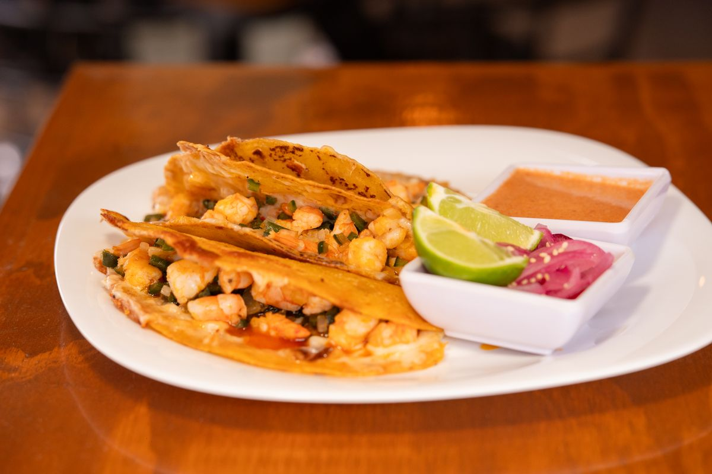

Mobile, AL
Chuck's Fish Mobile
A downtown Mobile seafood and sushi restaurant for dinner, with fresh Gulf catches and an award-winning sushi bar.

About
Chuck's Fish Mobile is a seafood and sushi restaurant in downtown Mobile, Alabama, at 551 Dauphin St. The kitchen serves fresh Gulf catches, Uptown shrimp, parmesan-crusted Gulf fish, sushi rolls, sashimi, and tuna poke nachos. The restaurant serves dinner only.
Services
Fresh Gulf catches
Fresh Gulf seafood from the restaurant's own wholesale market in Destin, Florida.
Uptown shrimp
Uptown shrimp, a house favorite.
Parmesan-crusted Gulf fish
Parmesan-crusted Gulf fish from the seafood menu.
Sushi rolls
Sushi rolls from the sushi bar.
Sashimi
Sashimi from the sushi bar.
Tuna poke nachos
Tuna poke nachos from the menu.
Gallery


All gallery photos are stock photos, labeled as such. They show the kind of work and setting described on this page, not this business.
Visit
Contact
Call +1 251-219-7051 Email ramason@chucksfish.com
Chuck's Fish Mobile serves Mobile, AL. Questions? Call +1 251-219-7051.